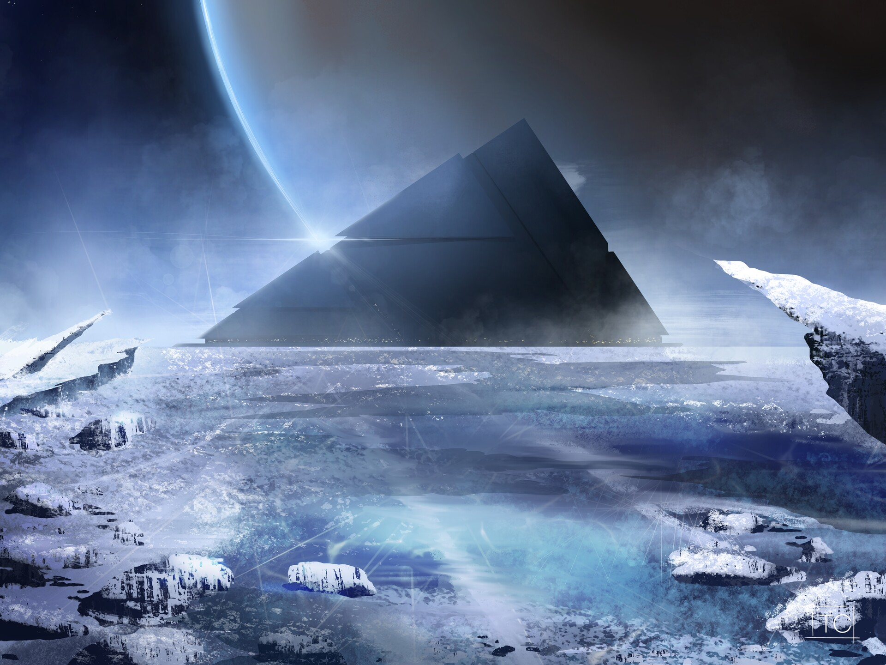
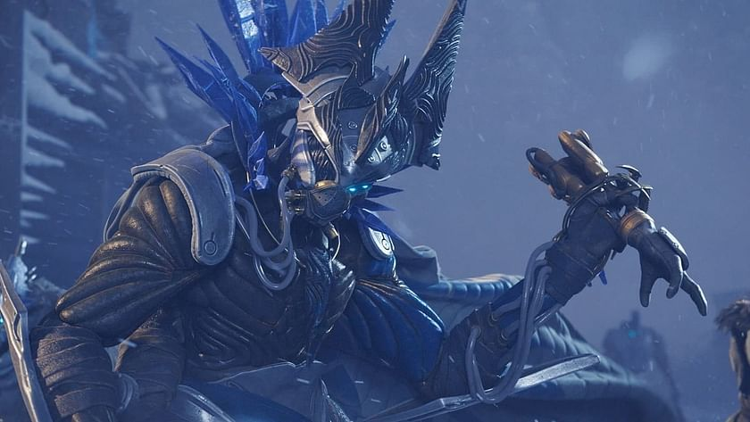

Krátce no našem odchodu z povrchu Měsíce jsme obdrželi nouzovou zprávu, odněkud z Europy, jednoh z měsíců Jupitera. Zpráva vypadala velice urgentně, a tak náš Strážce neváhal a vydali jsme se na Europu. Po přistání na ledovém povrchu měsíce, poblíž místa, odkud byla zpráva poslána, se nám skrz hustou ledovou mlhu zjeví stará, zamrzlá radiová stanice. Uvnitř jsme našli známý obličej. Variks je Eliksni, konkrétně druh, kterému Vanguard dal kolektivní název Vandal. Variks je ředitelem Věznice Starších; té samé věznice, z které kdysi uprchl Uldren Sov a Baroni Scorn. Při zeptání Variks přiznal, že Uldren s ním smluvil nabídku - Variks způsobí vzpouru, a Uldren mu poskytne možnost úniku, aniž by byl označen za viníka. Vandalové mají obvykle čtyři ruce - dvě na každé straně. Variks má pouze tři, místo čtvrté je pouze pahýl z ledových krystalů. Po dotázání Variks prozradí, co se mu stalo. Po útěku z věznice cestoval se skupinou Eliksni známí jako House Salvation, vedenou Eramis, která pahýl způsobila potom, co Variks vyjádřil svůj nesouhlas s jejímy úmysly. Jaké byly její úmysly? Podle Varikse - využití sil Temnoty pro jejich dobro. O Temnotě toho Strážci nevědějí moc, až na fakt, že je to čistý protějšek Světla. Po odchodu ze stanice se vydáváme na průzkum Europy, když v dálce náš Strážce zahlédne něco povědomého. V dálce se rozpíná pyramida, vzhledově stejná, jako pyramida pod povrchem našeho Měsíce. Vydáváme se blíže k pyramidě, na rozlehlou zasněženou pláň, kde se nachází skromný tábor. V táboře se nachází známé postavy: Eris, nyní na Europě a Drifter, nečestný muž co se nepovažuje za Strážce navzdory faktu, že ho oživil Ghost jménem Blue. A nakonec, tajemná ženská Exo postava, jejíž jméno nám není prozatím známo. Eris nám vysvětlí, že tu jsou pro stejný důvod, jaký nás Variks na měsíc přivolal - sílu Temnoty. V ten moment se z velmi vzdálené pyramidy vymrští plně černý zikkurat, a bezchybně se ustálí kus od tábora. Ghost nám naznačí, že bysme zikkurat měli prošetřit, a to taky uděláme. Po výstupu schodů zikkuratu se náš Strážce setká tváří v tvář se čtyřmi znepokojivými třískami Temnoty. Ty nás v pouhém okamžiku pohltí do temného prostoru, zdálnivě uvnitř pyramidy. Uvnitř se poprvé dozvídame o schopnosti Temnoty, manipulace ledových krystalů Stasis.


Díky kontaktům, které nám Variks předal, jsme byli schopni odhalit a vysopovat nejvyšší v řádu House Salvation, kdo podléhají přímo Eramis, a díky ochotě pyramidy jsme se naučili adeptně zacházet s novou sílou Temnoty. První na seznamu byla Phylaks. Podařilo se nám ji vylákat a porazit, a díky ní jsme se dozvěděli, že Eramis dokáže používat Stasis, stejně jako náš Strážce. Další byl Praksis, technokrat House Salvation. Praksis byl na vystopování mnohem těžší než Phylaks, avšak jeho schopnost obrany nebyla oproti Phylaks lepší. Poslední, přímo pod Eramis stála Kridis. Po úspěšném zátahu jedné ze základem okupovaných House Salvation jsme se dozvěděli o její přesné lokaci, ale také více o Exo cizince, než by si doteď přála. Zjistili jsme, že její celé jméno je Elisabeth Bray, a že spolu s Anou jsou vnučky geniálního vynálezce, Clovise Braye. Clovis ale není nikde k nalezení, a i přesto, že se dlouho spekulovalo, že se nachází pod povrchem Europy, tyto spekulace nikdy nebyly potvrzeny. S těmito novými informacemi se vydáváme za Kridis, kterou následně porazíme. Po porážce poslední překážky mezi námi a Eramis se vydáme zpět do tábora, a konfrontujeme Elisabeth s informacemi, které jsme zjistili o její minulosti. Ta nám přizná, že na Europě je z jediného důvodu: Najít Clovise a dozvědět se od něho co nejvíce o své minulosti. Mezi informacemi, co jsme v základně získali, se nacházel popis místa, kde by se původní Clovis Bray mohl nacházet: Bray Exoscience. Toto místo nám není cizí, protože v této podzemní laboratoři padl Praksis. S Elsie jsme se tedy vydali do zařízení, tentokrát s jinými odbočkami, které nás vedly na druhou stranu velkého komplexu. Na jejím konci? Velká robotická hlava, představující se jako Clovis Bray I. Tím byla mise Elisabeth Bray splněna, a náš Strážce se přesunul zpět k hlavnímu cíli; Zastavit Eramis. Stopy, které po sobě Kridis zanechala nás zavedly až na odlehlý útes krášlený budovami Eliksni architektury. Eramis toto místo pojmenovala Riis-Reborn, na poctu jejich domovského světa Riis. Uprostřed města se tyčila věž - centrála operací House Salvation. Náš Strážce neztrácí čas a rychle se vydává k úpatí věže. O nedlouho později se dostaneme na samotný vrchol, kde nás Eramis vyzve na duel. Než ale Strážce stihne reagovat, Eramis zamrazí nás i našeho Ghosta v ledu Stasis. Díky dokonalé znalosti Stasis se ale našemu Strážci podaří ze Stasis krystalu dostat, sesadit Eramis z velící pozice House Salvation, a nadobro zmrazit v krystalu Stasis ji samotnou. Krátce po rozpadu House Salvation se náš Strážce loučí s týmem na Europě a spolu se svým Ghostem se vrací zpět na Zemi, do posledního města lidstva.